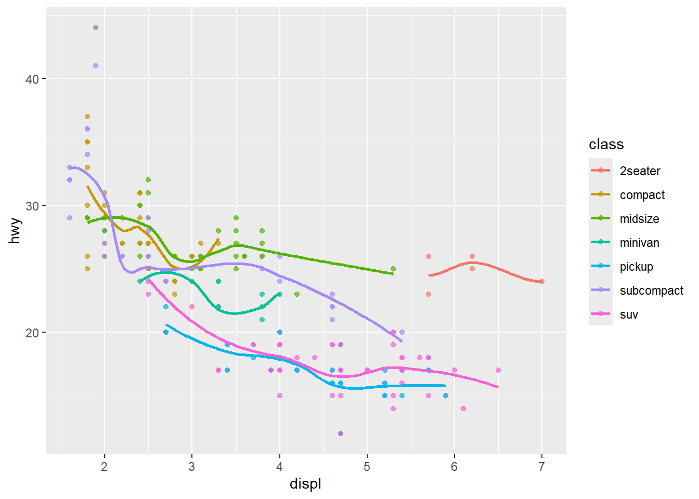

Assignment 1: Coding Showcase
Shannon Turner
Overview
This is a short analysis demonstrating basic skills: plotting and linear regression.
Data
Using the built-in txhousing dataset from
ggplot2.
library(ggplot2)
library(dplyr)
library(maps)
summary(txhousing)## city year month sales
## Length:8602 Min. :2000 Min. : 1.000 Min. : 6.0
## Class :character 1st Qu.:2003 1st Qu.: 3.000 1st Qu.: 86.0
## Mode :character Median :2007 Median : 6.000 Median : 169.0
## Mean :2007 Mean : 6.406 Mean : 549.6
## 3rd Qu.:2011 3rd Qu.: 9.000 3rd Qu.: 467.0
## Max. :2015 Max. :12.000 Max. :8945.0
## NA's :568
## volume median listings inventory
## Min. :8.350e+05 Min. : 50000 Min. : 0 Min. : 0.000
## 1st Qu.:1.084e+07 1st Qu.:100000 1st Qu.: 682 1st Qu.: 4.900
## Median :2.299e+07 Median :123800 Median : 1283 Median : 6.200
## Mean :1.069e+08 Mean :128131 Mean : 3217 Mean : 7.175
## 3rd Qu.:7.512e+07 3rd Qu.:150000 3rd Qu.: 2954 3rd Qu.: 8.150
## Max. :2.568e+09 Max. :304200 Max. :43107 Max. :55.900
## NA's :568 NA's :616 NA's :1424 NA's :1467
## date
## Min. :2000
## 1st Qu.:2004
## Median :2008
## Mean :2008
## 3rd Qu.:2012
## Max. :2016
## major_cities <- c("Austin", "Dallas", "Houston", "Corpus Christi", "San Antonio", "Lubbock", "El Paso")
plot_data <- txhousing %>%
filter(city %in% major_cities) %>%
group_by(city, year) %>%
summarize(median_sale_price = median(median, na.rm = TRUE), .groups = "drop")Plot
ggplot(plot_data, aes(x = year, y = median_sale_price, color = city)) +
geom_line(linewidth = 1.2) +
labs(title = "Housing Prices in Major Texas Cities",
x = "Year",
y = "Median Sale Price (USD)",
color = "City") +
theme_minimal()
Regression
for (c in major_cities) {
cat("\nCity:", c, "\n")
m <- lm(median_sale_price ~ year, data = plot_data %>% filter(city == c))
print(summary(m))
}##
## City: Austin
##
## Call:
## lm(formula = median_sale_price ~ year, data = plot_data %>% filter(city ==
## c))
##
## Residuals:
## Min 1Q Median 3Q Max
## -19555.4 -7898.1 -629.5 7160.8 29734.9
##
## Coefficients:
## Estimate Std. Error t value Pr(>|t|)
## (Intercept) -1.322e+07 1.375e+06 -9.615 1.52e-07 ***
## year 6.677e+03 6.849e+02 9.750 1.28e-07 ***
## ---
## Signif. codes: 0 '***' 0.001 '**' 0.01 '*' 0.05 '.' 0.1 ' ' 1
##
## Residual standard error: 12630 on 14 degrees of freedom
## Multiple R-squared: 0.8716, Adjusted R-squared: 0.8625
## F-statistic: 95.06 on 1 and 14 DF, p-value: 1.277e-07
##
##
## City: Dallas
##
## Call:
## lm(formula = median_sale_price ~ year, data = plot_data %>% filter(city ==
## c))
##
## Residuals:
## Min 1Q Median 3Q Max
## -21289 -10165 2393 5879 35337
##
## Coefficients:
## Estimate Std. Error t value Pr(>|t|)
## (Intercept) -8957752.6 1564463.5 -5.726 5.24e-05 ***
## year 4543.4 779.3 5.830 4.37e-05 ***
## ---
## Signif. codes: 0 '***' 0.001 '**' 0.01 '*' 0.05 '.' 0.1 ' ' 1
##
## Residual standard error: 14370 on 14 degrees of freedom
## Multiple R-squared: 0.7083, Adjusted R-squared: 0.6874
## F-statistic: 33.99 on 1 and 14 DF, p-value: 4.368e-05
##
##
## City: Houston
##
## Call:
## lm(formula = median_sale_price ~ year, data = plot_data %>% filter(city ==
## c))
##
## Residuals:
## Min 1Q Median 3Q Max
## -15415 -4427 1765 3570 18039
##
## Coefficients:
## Estimate Std. Error t value Pr(>|t|)
## (Intercept) -9958827.2 971339.2 -10.25 6.85e-08 ***
## year 5036.5 483.9 10.41 5.67e-08 ***
## ---
## Signif. codes: 0 '***' 0.001 '**' 0.01 '*' 0.05 '.' 0.1 ' ' 1
##
## Residual standard error: 8922 on 14 degrees of freedom
## Multiple R-squared: 0.8856, Adjusted R-squared: 0.8774
## F-statistic: 108.3 on 1 and 14 DF, p-value: 5.672e-08
##
##
## City: Corpus Christi
##
## Call:
## lm(formula = median_sale_price ~ year, data = plot_data %>% filter(city ==
## c))
##
## Residuals:
## Min 1Q Median 3Q Max
## -12894 -5120 -1725 5877 11369
##
## Coefficients:
## Estimate Std. Error t value Pr(>|t|)
## (Intercept) -1.055e+07 8.262e+05 -12.77 4.20e-09 ***
## year 5.319e+03 4.115e+02 12.92 3.59e-09 ***
## ---
## Signif. codes: 0 '***' 0.001 '**' 0.01 '*' 0.05 '.' 0.1 ' ' 1
##
## Residual standard error: 7588 on 14 degrees of freedom
## Multiple R-squared: 0.9227, Adjusted R-squared: 0.9171
## F-statistic: 167 on 1 and 14 DF, p-value: 3.589e-09
##
##
## City: San Antonio
##
## Call:
## lm(formula = median_sale_price ~ year, data = plot_data %>% filter(city ==
## c))
##
## Residuals:
## Min 1Q Median 3Q Max
## -8841 -3157 -1883 3928 8974
##
## Coefficients:
## Estimate Std. Error t value Pr(>|t|)
## (Intercept) -1.156e+07 6.146e+05 -18.81 2.46e-11 ***
## year 5.829e+03 3.061e+02 19.04 2.09e-11 ***
## ---
## Signif. codes: 0 '***' 0.001 '**' 0.01 '*' 0.05 '.' 0.1 ' ' 1
##
## Residual standard error: 5645 on 14 degrees of freedom
## Multiple R-squared: 0.9628, Adjusted R-squared: 0.9602
## F-statistic: 362.5 on 1 and 14 DF, p-value: 2.093e-11
##
##
## City: Lubbock
##
## Call:
## lm(formula = median_sale_price ~ year, data = plot_data %>% filter(city ==
## c))
##
## Residuals:
## Min 1Q Median 3Q Max
## -3549.8 -1486.7 -167.4 1302.0 4946.7
##
## Coefficients:
## Estimate Std. Error t value Pr(>|t|)
## (Intercept) -7045173 254901 -27.64 1.29e-13 ***
## year 3563 127 28.06 1.05e-13 ***
## ---
## Signif. codes: 0 '***' 0.001 '**' 0.01 '*' 0.05 '.' 0.1 ' ' 1
##
## Residual standard error: 2341 on 14 degrees of freedom
## Multiple R-squared: 0.9825, Adjusted R-squared: 0.9813
## F-statistic: 787.4 on 1 and 14 DF, p-value: 1.048e-13
##
##
## City: El Paso
##
## Call:
## lm(formula = median_sale_price ~ year, data = plot_data %>% filter(city ==
## c))
##
## Residuals:
## Min 1Q Median 3Q Max
## -10492 -6688 -1759 4189 16626
##
## Coefficients:
## Estimate Std. Error t value Pr(>|t|)
## (Intercept) -8639930.9 973903.1 -8.871 4.03e-07 ***
## year 4363.1 485.1 8.994 3.42e-07 ***
## ---
## Signif. codes: 0 '***' 0.001 '**' 0.01 '*' 0.05 '.' 0.1 ' ' 1
##
## Residual standard error: 8945 on 14 degrees of freedom
## Multiple R-squared: 0.8525, Adjusted R-squared: 0.8419
## F-statistic: 80.89 on 1 and 14 DF, p-value: 3.417e-07Map
city_coords <- tibble::tribble(
~city, ~lat, ~long,
"Austin", 30.2672, -97.7431,
"Dallas", 32.7767, -96.7970,
"Houston", 29.7604, -95.3698,
"Corpus Christi", 27.8006, -97.3964,
"San Antonio", 29.4241, -98.4936,
"Lubbock", 33.5779, -101.8552,
"El Paso", 31.7619, -106.4850
)
reg_data <- txhousing %>%
filter(city %in% city_coords$city) %>%
group_by(city, year) %>%
summarize(median_sale_price = median(median, na.rm = TRUE), .groups = "drop")
slopes <- reg_data %>%
group_by(city) %>%
do({
fit <- lm(median_sale_price ~ year, data = .)
tibble(slope = coef(fit)[2])
}) %>%
ungroup()
plot_df <- left_join(slopes, city_coords, by = "city")
tx_map <- map_data("state") %>% filter(region == "texas")
ggplot() +
geom_polygon(data = tx_map, aes(x = long, y = lat, group = group),
fill = "gray95", color = "gray70") +
geom_point(data = plot_df, aes(x = long, y = lat, color = slope), size = 8, alpha = .8) +
geom_text(data = plot_df, aes(x = long, y = lat, label = city), vjust = -1, size = 4) +
scale_color_gradient(low = "lightblue", high = "darkblue", name = "Rate of Increase\n(USD/yr)") +
labs(title = "Median Home Sale Price in Major Texas Cities, 2000-2015",
x = NULL, y = NULL) +
theme_void()
Summary
Each of the seven selected Texas cities displayed a positive trend in median sale price of houses between the years 2000 and 2015. Austin housing prices increased most rapidly, at a rate of $6,677 per year. Lubbock housing prices increased the slowest, at a rate of $3,565 per year. Because this data is not current, implications of this data are limited. Further analysis could be conducted to compare these findings to trends of the most recent decade to further assess housing cost trends in Texas.